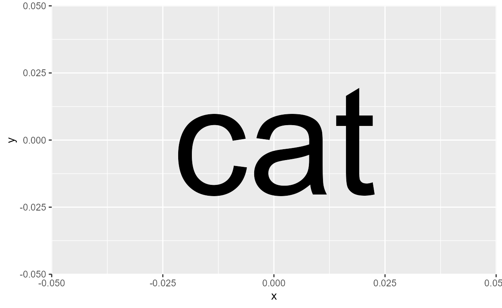
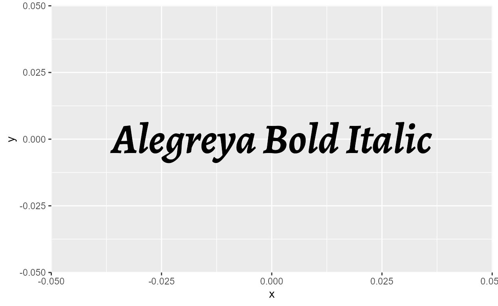
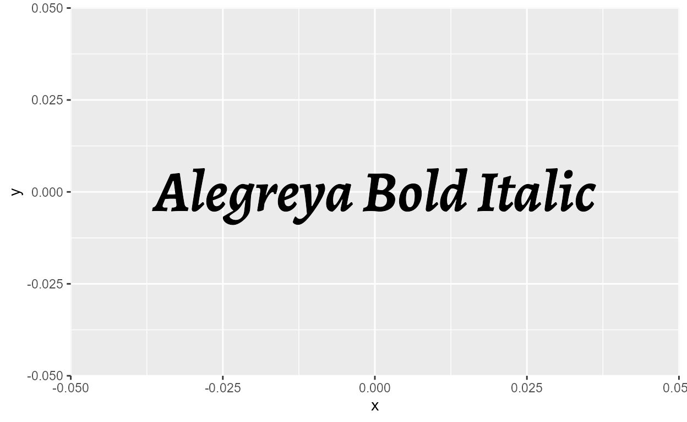

Getting custom fonts to work in R has historically been pretty difficult.1 Folks who have ventured into this area are probably familiar with packages like {showtext} and {extrafont} which were the more established solutions to importing fonts in the past, though there’s always been a huge variation on people’s mileage with these packages because the issue runs much deeper.
At a high level, getting custom fonts to work involve the non-trivial task of unifying the graphics device, the operating system, and text rendering to seamlessly work with each other. Luckily for us in 2021, we have an amazing solution to this problem thanks to recent developments in the {ragg} and {systemfonts} packages by RStudio.2. For more details on the recent improvements to font support, you should check out these official blog posts:
This is great news because a lot of the work in getting custom fonts to work in R is being done for us under the hood!
Setting up {ragg}
The first thing you should do, if you haven’t already, is to install {ragg} and {systemfonts}
install.packages('ragg')
install.packages('systemfonts')
Next, we want to make sure that whenever we output a plot3, we do so using the AGG graphics device (that’s the “agg” part of “ragg”). There are at least four places where this is relevant:
Rendering to the RStudio plot pane - for RStudio >= 1.4, go to Tools > Global Options > General > Graphics and set the Backend to AGG.

Figure 1: Screenshot from the ragg package website - https://ragg.r-lib.org
Saving as external file - call any of the
ragg::agg_*()functions to render plots using the AGG device.- The above way works for any plot, but if you use
{ggplot2}andggplot2::ggsave()a lot, you might wonder whether you can just pass inragg::agg_png()into thedeviceargument and specify the arguments inggsave()instead. This turns out to actually not be so straightforward, but will likely be patched in the next update (v3.3.4?) 4. I personally just have the long-winded rendering method wrapped into a function in my personal package.5
- The above way works for any plot, but if you use
RMarkdown outputs - Pass in a
{ragg}device hasresandunitsspecified to thedevargument ofknitr::chunk_opts$set()at the top of the script.6ragg_png = function(..., res = 150) { ragg::agg_png(..., res = res, units = "in") } opts_chunk$set(dev = "ragg_png")Shiny - Simply set
options(shiny.useragg = TRUE)before rendering. Also check out the {thematic} package for using custom fonts in shiny plot outputs.
Installing custom fonts
Now that you have {ragg} and {systemfonts} installed, take it for a spin with a custom font! When you’re rendering plots using {ragg}, custom fonts should just work as long as you have them installed on your local machine.
If you haven’t really worked with custom fonts before, “installing a custom font” simply means finding the font file on the internet, downloading it, and drag-and-drop into a special folder on your local machine. It’s something like Network/Library/Fonts for Macs and Microsoft/Windows/Fonts for Windows. There can actually be a bit more to this (in Windows 10, for example, you have to drag and drop fonts onto the “Fonts” section of Settings), so make sure to google and check the process for installing fonts for your machine.
Font files come in many forms. In general, fonts files that match these two criteria tend to work the best:
Fonts in
.otf(OpenType Font) or.ttf(TrueType Font) formats. These are font formats that are installable on your machine. You want to avoid other formats like.woffor.woff2, for example, which are designed for use for the web. In theory both.otfand.ttfshould work with{ragg}, though I’ve sometimes had trouble with.otf. In those cases, I simply converted the.otffont file to.ttfbefore installing it, using free online conversion tools that you can easily find on Google.Static fonts. A static font means that each member of the font family has their own set of glyphs (i.e., there is a font file for each style). This is in contrast to variable fonts, where you have a single font file which can take the form of multiple styles.7 To illustrate, look at the difference between the static (top) vs. variable (bottom) files for the Alegreya family.
Figure 2: Static font files for Alegreya
Figure 3: Variable font files for Alegreya
We see that static fonts are differentiated from variable fonts by having a distinct file for each style, like
Alegreya-Black.ttf. On the other hand, variable fonts usually say “variable” somewhere in the file name, and are slightly larger in size than any individual static member. Note that not all fonts have both static and variable files, and not all static and variable files are.ttf(there can be static.otfand variable.ttffiles).8


The above two images show the contents of the .zip file that you’d get if you went to Google Fonts (an awesome repository of free and open-source professional fonts) and clicked the Download family button on the page for Alegreya. If you want to use Alegreya in R, then you simply drag-and-drop all the static font files in /static into your system’s font folder (or in Settings > Fonts for Windows 10).
Once you install a custom font on your system, it should also be available elsewhere locally on your machine (this is a good sanity check). For example, I can use Alegreya in Microsoft Word after I download it.

Figure 4: Alegreya in Microsoft Word
And by extension Alegreya should now be available for figures rendered with {ragg}. Let’s try using Alegreya in ggplot by passing it to the family argument of geom_text()
It just works!
More specifically, it works because Alegreya is visible to {systemfonts}, which handles text rendering for {ragg}. If we filter list of fonts from systemfonts::system_fonts(), we indeed find the 12 styles of Alegreya from the static .ttf files that we installed!
library(systemfonts)
library(dplyr)
library(stringr)
system_fonts() %>%
filter(family == "Alegreya") %>%
transmute(family, style, file = str_extract(path, "[\\w-]+\\.ttf$"))
# A tibble: 12 x 3
family style file
<chr> <chr> <chr>
1 Alegreya Black Italic Alegreya-BlackItalic.ttf
2 Alegreya Bold Alegreya-Bold.ttf
3 Alegreya Bold Italic Alegreya-BoldItalic.ttf
4 Alegreya ExtraBold Alegreya-ExtraBold.ttf
5 Alegreya ExtraBold Italic Alegreya-ExtraBoldItalic.ttf
6 Alegreya Italic Alegreya-Italic.ttf
7 Alegreya Medium Alegreya-Medium.ttf
8 Alegreya Medium Italic Alegreya-MediumItalic.ttf
9 Alegreya Regular Alegreya-Regular.ttf
10 Alegreya SemiBold Alegreya-SemiBold.ttf
11 Alegreya SemiBold Italic Alegreya-SemiBoldItalic.ttf
12 Alegreya Black Alegreya-Black.ttfDebugging custom fonts
So far we’ve seen that the workflow for setting up and installing fonts is very straightforward. But what do we do in times when things inevitable go wrong?
Consider the case of using Font Awesome, an icon font that renders special character sequences as icon glyphs.9 Font Awesome has a free version (CC-BY and SIL OFL license), and say we want to use it for personal use for a TidyTuesday submission.
The first thing we do is locate the font file. Font Awesome is open source, and the free version (Font Awesome 5 Free) is updated on Github. The most recent release as of this blog post is 5.15.3 - follow this link to download fontawesome-free-5.15.3-desktop.zip. If you unzip the file, you’ll find .otf font files corresponding to the three styles available in the free version: Regular, Solid, and Brands.
Figure 5: Font Awesome 5 files
Remember how I said R plays nicer with .ttf than .otf fonts? Lets go ahead and convert the .otf Font Awesome files using an online converter, like https://convertio.co/otf-ttf. Now, with the three font files in .ttf format, follow the instructions for installing fonts on your OS.
Once Font Awesome is installed on our local machine, it should be visible to {systemfonts}, like this:
system_fonts() %>%
filter(str_detect(family, "Font Awesome 5")) %>%
transmute(family, style, file = stringr::str_extract(path, "[\\w-]+\\.ttf$"))
# A tibble: 3 x 3
family style file
<chr> <chr> <chr>
1 Font Awesome 5 Free Solid Font-Awesome-5-Free-Solid-900.ttf
2 Font Awesome 5 Brands Regular Font-Awesome-5-Brands-Regular-400.ttf
3 Font Awesome 5 Free Regular Font-Awesome-5-Free-Regular-400.ttfNow let’s try plotting some icons!
We see that we can render the Regular style (clock) and the Brands style (twitter).
But what about rendering in the Solid style? Font Awesome tells me that the Solid style has a cat icon, so let’s try it.

Uh oh, that didn’t work. Well that’s because Solid is actually a style, not a family. If you go back to the output from system_fonts(), we see that Font Awesome actually consists of two font families: Font Awesome 5 Brands which has a “Regular” style, and Font Awesome 5 Free with a “Regular” style and a “Solid” style.
fontawesome-free-5.15.3-desktop
|--- Font Awesome 5 Free
| Regular
| Solid
|--- Font Awesome 5 Brands
| Regular
In geom_text(), the font style is set by the fontface argument. When we don’t specify fontface, such as in our working example for the clock and twitter icons, it defaults to the regular style (Technically, it defaults to fontface = "plain", which is the same thing).
So the solution to our problem is to put in fontface = "solid", right…?
ggplot(NULL, aes(0, 0)) +
geom_text(
aes(label = "cat"), size = 50,
family = "Font Awesome 5 Free", fontface = "solid"
)
Error in FUN(X[[i]], ...): invalid fontface solidWell now it just errors! The issue here runs a bit deeper: if we track down the error,10 it takes us to a function inside grid::gpar() that validates fontface. 11 If we take a look at the code, we see that only a very few font styles are valid, and “solid” isn’t one of them.
Okay, so then how can we ever access the Solid style of the Font Awesome 5 Free family? Luckily, there’s a solution: use systemfonts::register_font to register the Solid style as the “plain” style of its own font family!
You can do this by passing in the name of the new font family in the name argument and then setting the plain argument to the path of the font file.
fa_solid_path <- system_fonts() %>%
filter(family == "Font Awesome 5 Free", style == "Solid") %>%
pull(path)
systemfonts::register_font(
name = "Font Awesome 5 Free Solid",
plain = fa_solid_path
)
To check if we were successful in registering this new font variant, we can call registry_fonts():
systemfonts::registry_fonts() %>%
transmute(family, style, file = stringr::str_extract(path, "[\\w-]+\\.ttf$"))
# A tibble: 4 x 3
family style file
<chr> <chr> <chr>
1 Font Awesome 5 Free Solid Regular Font-Awesome-5-Free-Solid-900.ttf
2 Font Awesome 5 Free Solid Bold Font-Awesome-5-Free-Solid-900.ttf
3 Font Awesome 5 Free Solid Italic Font-Awesome-5-Free-Solid-900.ttf
4 Font Awesome 5 Free Solid Bold Italic Font-Awesome-5-Free-Solid-900.ttfNow our Solid font is available as the Regular (a.k.a. “plain”) style of its own font family, Font Awesome 5 Free Solid!12.
Now we’re back to our cat icon example. Again, because Font Awewsome says there’s a cat icon for Solid, we’d expect a cat icon if we render the text “cat” with the Solid style. Let’s now set the family argument to our newly registered “Font Awesome 5 Free Solid” family and see what happens:
Third time’s the charm !!!
Hoisting font variants
Hopefully the lesson is now clear: to make a custom font work in R, it must be visible to systemfonts::system_fonts() in a style that is accessible to grid::gpar(). The nifty trick of registering an inaccessible style as the “plain” member of its own family can be extended and automated as a function. In my experimental package, I have a function called font_hoist() which “hoists”13/lifts all styles of a family as the “plain” style of their own families. This way, you never have to worry about things going wrong in the fontface argument.
Let’s apply this to our Alegreya family. As we saw earlier, it has 12 styles, but only 4 can be accessed by grid::gpar().14 But once we hoist the styles, we can use all of them to render text!
# install_github("yjunechoe/junebug")
junebug::font_hoist("Alegreya")
Hoisted 12 variants:
Alegreya Black Italic
Alegreya Bold
Alegreya Bold Italic
Alegreya ExtraBold
Alegreya ExtraBold Italic
Alegreya Italic
Alegreya Medium
Alegreya Medium Italic
Alegreya Regular
Alegreya SemiBold
Alegreya SemiBold Italic
Alegreya Black# Grab the newly registered font families
alegreya_styles <- systemfonts::registry_fonts() %>%
filter(str_detect(family, "Alegreya"), style == "Regular") %>%
pull(family)
purrr::walk(
alegreya_styles,
~ print(
ggplot(NULL, aes(0, 0)) +
geom_text(aes(label = .x), size = 14, family = .x)
)
)
 

In fact, text rendering as a whole is an incredibly complicated task. Check out Text Rendering Hates You for a fun and informative read.↩︎
Also check out the
{textshaping}package for more!↩︎I’m focusing on outputing to bitmap (e.g.,
.png,.jpeg,.tiff). For other formats like SVG (which I often default to for online material), you can usesvglite- read more on the package website.↩︎Check out the discussion on this issue and this commit. There’s also been some talk of making AGG the default renderer, though I don’t know if that’s been settled.↩︎
Please excuse the messy code.↩︎
These are used to calculate DPI (dots per inch). Resolution is in pixels, so
res=150andunits="inch"is the same asdpi=150.{ragg}devices don’t have adpiargument like the default device, so you have to specify both resolution and units.↩︎Variable fonts are hit-or-miss because while
{ragg}and{systemfonts}do support some variable font features, “variable” can mean many different things, some of which are not supported (e.g., variable width)↩︎In my experience, though, static fonts tend to be
.ttfand variable fonts tend to be.otf.↩︎The ability to render icon fonts is one of the most exciting part of improved text rendering in R, and you can learn more about them in a lightning talk that I recently gave on this topic.↩︎
options(error = recover)is your friend! And remember to setoptions(error = NULL)back once you’re done!↩︎You might wonder: what’s the
{grid}package doing here? Well,{grid}is kinda the “backend” for{ggplot2}that handles the actual “drawing to the canvas”, which is why it’s relevant here. For example,geom_text()returns a Graphical object (“Grob”), specificallygrid::textGrob(), that inherits arguments likefamilyandfontface(which are in turn passed intogrid::gpar()).↩︎It’s also registered as the Bold, Italic, and Bold Italic styles as well, which is what happens by default if you only supply the
plainargument toregister_font(). You can just ignore this.↩︎Borrowing terminology from
tidyr::hoist(), the under-appreciated beast of list-column workflows↩︎Regular as “plain”, Bold as “bold”, Italic as “italic”, and Bold Italic as “bold.italic”.↩︎